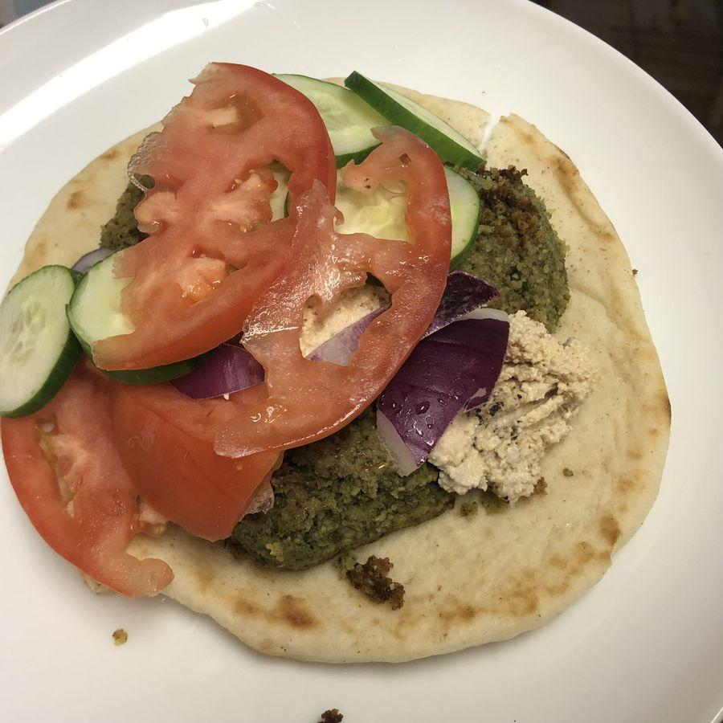

Personal rating: 3 / 5

2 cups dried chickpeas
1 yellow onion, coarsely chopped
3 cloves garlic, coarsely chopped
1 Tbsp coriander seed, lightly crushed
1.5 tsp salt
1/2 tsp ground cumin
1/2 tsp black pepper
2 cups packed cilantro leaves
2 cups packed parsley (no long stems)
Canola oil, for frying
Serve on pita, on a pile of greens, or with spicy harissa or creamy tahini
Use a slotted spoon to transfer them to the rack to drain. Repeat to cook all the falafel, making sure the oil returns to the proper temperature before adding the next batch.
These turned out OK. They mostly held together and I had the leftovers in a couple of meals including the meal in the photo